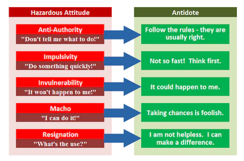

References:
Objectives:
The learner should develop knowledge of the elements related to managing and mitigating risk and it’s application to effective teaching per the Instructor ACS.
Elements:
Principles of Risk Management Risk Management Process Risk Management Tools Teaching Risk Management Managing Risk during Flight Instruction Obstacles to Maintaining SA ADM, CRM, & SRM
Completion Standards
The learner can not only recognize potentially hazardous situations and effectively mitigate risk but can teach practical risk management.
Principles of Risk Management
The goal of risk management is to proactively identify safety-related hazards and mitigate the associated risks.
Four Fundamental Principles of Risk Management:
Accept No Unnecessary Risk
Flying is impossible without risk, but do not make a situation more dangerous than necessary
- Accept necessary risk required to complete the flight or task successfully
Make Risk Decisions at the Appropriate Level
Risk decisions should be made by the person who can develop and implement risk controls
- In a single-pilot situation, the pilot makes the decisions, not ATC or passengers
Accept Risk When Benefits Outweigh the Costs
All identified benefits should be compared against all identified costs
- Even high risk endeavors can be undertaken when there is clear knowledge that the sum of the benefits outweighs the sum of the costs
Integrate Risk Management into Planning at All Levels
Risks are more easily assessed and managed in the early planning stages of a flight, and changes made later in the process may become more difficult, time consuming, and/or expensive
- Safety enhancement occurs at any time appropriate and effective risk management occurs
Risk Management Process
The Risk Management Process is three steps which identifies operational hazards and takes reasonable measures to reduce risk to personnel, equipment, and the mission.
Step 1: Identify the Hazard
A hazard is defined as any real or potential condition that can cause degradation, injury, illness, death, or damage to or loss of equipment or property.
- Hazards are identified through experience, common sense, and specific analytic tools.
Once the pilot determines that a hazard poses a potential risk to the flight, it may be further analyzed
Step 2: Assess the Risk
Assess each identified risk in terms of it’s likelihood (probability) and severity (consequences) that could result from the hazard.
- A risk assessment matrix can then be used to assess the overall risk
Step 3: Mitigate the Risk
High and Serious Risks can be mitigated by taking action to lower the likelihood and/or severity to lower levels. Medium and Low risks typically do not require mitigation
- Effective control measures reduce or eliminate the most critical risks
Risk Management
By reducing risk to acceptable levels, pilots can complete flights safely and ensure alternate options exist as needed
Risk Management Tools
A number of tools exist to help the pilot examine, identify, and manage risks. These include:
PAVE Checklist
P = Pilot in Command (PIC) A = Aircraft V = enVironment E = External Pressures
Used to break the risks of flight into 4 categories to allow the pilot to examine key factors of risk in the flight.
P = Pilot in Command (PIC)
Is the pilot ready for this trip, in terms of experience, currency, and physical and emotional condition.
IMSAFE
The IMSAFE checklist combined with proficiency, recency, and currency helps provide the answer
A = Aircraft
What limitations will the aircraft impose on the trip?
- Is this the right aircraft for the flight?
- Am I familiar with and current in this aircraft?
- Is this aircraft equipped for the flight?
- Lights
- Instruments
- Adequate Nav and Comm equipment
- Can this aircraft use the runways available for the trip with an adequate margin of safety?
- Can this aircraft carry the planned load?
- Can this aircraft operate at the altitudes needed for this trip?
- Does this aircraft have sufficient fuel capacity, with reserves, for the planned legs?
- Does the fuel quantity delivered match the quantity ordered?
V = enVironment
What limitations will the weather, terrain, airport, and time of day impose on this trip?
Weather
- What are the current and forecast ceiling and visibility?
- What alternates are available if the weather is worse than forecast?
- What are the winds at the airports being used and the strength of the crosswind component?
- Strong winds from any mountainous terrain?
- Any thunderstorms present or forecast?
- If there are clouds, is there any icing, current or forecast? What is the temp/dew point spread and the current temp at altitude? Can a descent be made safely all along the route?
- If icing is encountered, is the pilot experienced at operating any deicing or anti-icing equipment? Is the equipment functional? What icing conditions, if any, is it rated for?
Terrain
- What are the minimum safe altitudes along the route?
- Is there mountainous terrain or obstacles along the route?
Airport
- What lights are available at the destination and alternate airports? VASI/PAPI? Are they working? Will the pilot need the radio to turn them on?
- Any nearby NOTAMs?
- Are there any divert fields along the route of flight?
- Are there instrument approaches if needed at the destination or alternate? What kind? What are the minimums?
Airspace
- If the trip is over remote areas, is there appropriate clothing, water, and survival gear onboard?
- If the trip is over water or unpopulated areas, might there be a loss of visual references?
- Will there by any airspace or TFRs along the route of flight?
Time of Day
- Will the flight conditions allow a safe emergency landing at night?
- Are the aircraft lights operational during the preflight?
- Is a flashlight available?
E = External Pressures
External Pressures are influences external to the flight that create a sense of pressure to complete the flight, often at the expense of safety
- Someone waiting at the airport for the flight’s arrival
- A passenger the pilot does not want to disappoint
- The desire to demonstrate pilot qualifications
- The desire to impress someone
- The desire to satisfy a specific personal goal
- The pilot’s general goal-completion orientation
- Emotional pressure associated with acknowledging that the skill and experience level of the pilot is lower than they would like them to be
External Pressures
Management of external pressures is the single most important key to risk management because it is the one risk factor category that can cause a pilot to ignore all other risk factors
5P Checklist
Used to evaluate the situation at key decision points during the flight or when an emergency arises. At least 5 times before and during the flight, review and consider the 5Ps
5P Decision Points
-
Preflight
-
Pre-Takeoff
-
Hourly or at the midpoint of flight
-
Pre-descent
-
Just prior to the FAF or entering the pattern
5Ps
Plan
The mission, which is constantly changing and needs to be adjusted
- Planning
- Weather
- Route
- Fuel
- Pubs currency
- Etc.
Plane
- Conditions
- Abilities
- Performance
- Automation
- Database Currency
- Etc
- Equipment
- Systems
- Etc.
Pilot
Passengers
- Ensure passengers are involved in the decision making process
- Ensure they understand risk involved in situations
- Understand what passengers want to do, they may be more risk averse than you
Programming
- Plan in advance when/where programming approaches/route changes and airport info gathering should occur
- Familiarity with the equipment, route, local ATC environment, and personal capabilities should drive when, where, and how the automation is programmed and used
Flight Risk Assessment Tools (FRAT)
Enables proactive hazard identification, is easy to use, and visually depicts risk.
- Formal process using pen/paper to help remove personal desires and emotion from decision making
When risk exceeds the acceptable level, reevaluate hazards and reduce risk. If risk cannot be reduced, don’t fly!
IMSAFE Checklist
Helps determine the physical and mental readiness of the pilot for flight
I = Illness
Any symptoms?
M = Medication
Taking any?
Stress
Family, money, relationships, work, etc
Alcohol
Drinking? 8 hours BTT
Fatigue
Well rested?
Emotion
Upset?
Teaching Risk Management
It is most beneficial if risk management is taught starting from the first lesson and then integrated into the rest of training. It should be included in all preflight and postflight briefings
- Encourage learner participation and as experience increases, have the learner lead
RM should also be included in recurrent, transition, flight reviews, IPCs, etc.
Teaching Techniques by Phase of Instruction
Private Pilot
Pre-Solo
- Part of every pre- and post-flight briefing
- Introduce a non-numerical FRAT and demo it’s use. Learner can conduct basic RM analysis by solo
Post-Solo to XC
- Perform risk analysis of planned flight with some help from instructor
- Instructor reviews RM prior to solo flight, and learner debriefs instructor on RM aspects of the flight
XC
- Learner masters RM techniques
- Learner completes a full risk analysis for every flight and reviews it with instructor
Instrument
- Emphasize broad RM techniques to analyze/evaluate complex weather and other elements
Transition
- Employ scenarios emphasizing RM aspects of the new plane
- Performance
- Equipment
- Procedures
- etc
- Emphasize SRM skills
- Automation management
- Task/workload management
- SA
- etc.
Recurrent/Flight Reviews/IPCs
- It may have been a while since the learner has been exposed to RM training
- Use scenarios that mirror the pilot’s typical operating profile
Operations Flights
- Encourage operational pilots to practice RM on all their flights
- Scale RM procedures to match the complexity of the flight
Professional Pilots
- Most professional pilots encounter RM and more training at their jobs
- Emphasize RM factors specific to the training/flight outside of their job
- Single Pilot GA is different from multi-crewed jet flight, etc.
Managing Risk during Flight Instruction
The same RM techniques taught to leaners apply to the instructor. It is critical to maintain SA of the aircraft state, traffic, weather, airspace, and what the learner is doing/planning to do. The learner should also be included in all stages of risk management
Common Flight Instruction Risks
PAVE
Pilot
Be familiar with the aircraft and avionics before instructing in it
Aircraft
Determine airworthiness, resolve any concerns
enVironment
Risks from weather, terrain, night ops, airports, airspace, etc.
External
Be conscious of the learner’s limitations, concerns, and other factors that can affect performance
Takeoff and Landing Considerations
Takeoff
- Takeoff occurs quickly, and there is not enough time to teach effectively
- The learner is focused on the takeoff and likely does not have the attention to listen and learn
- The majority of teaching should be done prior to contacting tower/advising CTAF of takeoff
- Imperative the instructor creates realistic training scenarios to mimic what the learner will encounter in real life
- Don’t create unnecessary hazards
- Be aware of and adjust for other aircraft
- Wake turbulence, in-trail spacing, separation from other traffic, etc.
Landing
- Don’t teach landings mechanically. Instead, convey problems and solutions based on the specific approach.
- Teach the learner to adjust based on the aircraft, environment, conditions, and performance
- Teach when the student can listen and absorb
- Landings can require high concentration and increased stress
- Used concise prompting on approach to landing to fix/teach
- Certain landings present unique risks
- Be aware of the associated risks
- Strong crosswinds, low approach speeds for short field landings, etc.
- Be aware of the associated risks
- Anticipate potential landing errors and risks based on the maneuver
Obstacles to Maintaining SA
Distraction
- Contributing factor in many accidents
- Minor problem can result in neglecting proper control of the aircraft
- Divide attention → flying always comes first
Fatigue
- Impairs alertness and performance
- Two major phenomena
- Sleep loss
- Circadian Rhythm Disruption
- Normal response to many flight operation conditions
- Low pressure, humidity, noise, and vibration make pilot susceptible to sleep fatigue
- Only effective treatment is sleep
Complacenty
- Overconfidence from repeated experience
- Reduces effectiveness in the flight deck
- Difficult to recognize
- Be especially alert to complacency in learners with significant experience
- Advanced avionics can promote complacency and inattention
- Exercises to recognize complacency and situational awareness
- Ask about positions of other aircraft in the pattern, instrument indications, and the aircraft’s location in relation to references
- Focus the learner’s attention on an imaginary problem
- Point out that SA is not being maintained if the learner diverts too much attention from other tasks
ADM, CRM, & SRM
Aeronautical Decision Making (ADM)
A systematic approach to the mental process used by pilots to consistently determine the best course of action in response to a given set of circumstances
- Teaching pilots to make sound decisions is the key to preventing accidents
- Estimated that ~80% of all aviation accidents are a result of human factors
ADM Decision Making Process
1. Define the Problem
Recognize a change has occurred or an expected change did not occur
- Critical Error → Incorrectly defining the problem
- Attempting to solve a problem that may not exists or be the cause of the change
- Wastes time and energy and distracts from flying
2. Choose a Course of Action
Evaluate the need to react, determine actions to resolve the situation in the time available
- Consider the expected outcome of each action and associated risks
3. Implement the Decision and Evaluate the Outcome
Factors Affecting Decision Making
Hazardous Attitudes
Negative attitudes that affect the quality of decisions and contribute to poor judgement.
- Recognizing the 5 hazardous attitudes is the first step to neutralizing the attitudes.
- Once recognized, label it as hazardous and state the antidote

Stress Management
Learning to cope with stress is an effective ADM tool
- A certain amount of stress is good. It keeps you alert and prevents complacency
- Stress is cumulative, too much can amount to an intolerable burden
- Performance increases with the onset of stress, peaks, then falls rapidly as stress gets too high
- Stressors can increase risk of error
- Physical: Associated with the environment (temp, noise, vibe, lack of oxygen)
- Physiological: Physical conditions (fatigue, lack of fitness, missed meals)
- Psychological: Social or emotional factors (divorce, death in the family, sick child)
- Recognize when stress is affecting a learner
- Seems distracted or has a difficult time accomplishing the tasks
- Try to determine the cause
- To help learners, instructor can recommend actions
- Have them self-assess then set realistic goal
- Put the learner and their program first
Single Pilot Resource Management (SRM)/Crew Resource Management (CRM)
Application of team management concepts in the flight deck environment
- Includes all groups working with the flight crew involved in decisions to operate a flight safely
- Pilots
- Dispatchers
- Cabin Crew
- Maintenance
- ATC
- Use all available resources
- Internal Resources found in the flight deck during flight
- Equipment, systems, charts, books, etc
- Ingenuity, knowledge, skill
- Other passengers, even if not pilots
- External Resources
- ATC and flight service specialists
- Traffic advisories, vectors, weather info, emergency assistance
- ATC and flight service specialists
- Workload Management
- Plan, prioritize, and sequence to prevent overload
- Prepare for high workload situations ahead of time
- Be able to recognize high workloads
- Faster paced work along with divided attention
- Stay ahead as much as possible
- Manage tasks in order of importance when behind
- Internal Resources found in the flight deck during flight
- 5Ps check
Important
It is extremely important that a pilot (especially a student pilot) can recognize and effectively mitigate risk to provide a safe flight. This chapter provided many factors to consider and ways to reduce the inherent risk associated with flying.